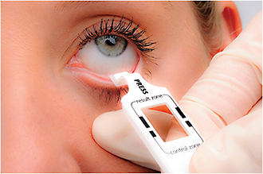

Differentiating diseases and conditions using clinical symptoms and signs alone is often challenging. Although clinical presentation can be similar, patient management and treatment plans vary for different conditions. Point-of-care (POC) or in-office testing allows a rapid and accurate test to be performed during the patient’s initial visit. Receiving prompt test results supports the clinician’s informed decision and appropriate treatment plan, helping to reduce the spread of disease, limit inappropriate treatments, and decrease healthcare costs. POC tests are widely used in pediatrics as well as other primary care specialties and are increasing in popularity among eye care professionals as patients continue to expect faster, better, and more accurate care.
RPS’s innovative and patented technology platforms facilitate the development of a spectrum of novel POC tests to support the rapid and cost-effective diagnosis of patients with infectious diseases and inflammatory conditions. RPS was founded by a family of ophthalmologists. Eye care professionals make up the company’s main customer base. RPS tests are also used in primary care, urgent care, and government healthcare settings. All RPS tests have high sensitivity and specificity, and can be easily performed by a clinician or their staff without extensive training or ancillary equipment.
Currently available tests include InflammaDry to aid in the diagnosis of dry eye disease and AdenoPlus to aid in the diagnosis of adenoviral conjunctivitis. These disposable, single-use tests lead to a more accurate diagnosis during the initial clinical exam, which allows for better patient management and therapeutic decision-making.
Figure 1. RPS scientists at work
The InflammaDry and AdenoPlus tests are both designated as CLIA-waived tests. In the U.S., the Centers for Medicare and Medicaid Services (CMS) regulates the examination of human specimens (e.g., tissue, blood, urine, etc.) for diagnosis, prevention, or treatment purposes through the Clinical Laboratory Improvement Amendments (CLIA). The objective of the CLIA program is to ensure quality laboratory testing, even at the point-of-care.
Any healthcare provider who intends to receive reimbursement for the Medicare or Medicaid billing of CLIA-waived tests must obtain a CLIA certificate of waiver, which is a registration with the U.S. Department of Health and Human Services that allows medical office personnel to collect a sample and perform a CLIA-waived test within their office. For assistance obtaining a CLIA certificate of waiver, visit www.rpscliawizard.com.
Both of RPS’s CLIA-waived tests can be easily integrated into the flow of a busy practice, especially because technicians can perform the tests during the patient’s initial workup. The tests require only a small tear sample collected from the inside of the lower eyelid and take less than 2 minutes to perform. Results are available in 10 minutes with a blue control line displayed for a negative result and both blue and red lines displayed for a positive result. RPS tests are also reimbursable by Medicare and other insurance providers. Eye care practices can order the InflammaDry and AdenoPlus tests on the easy-to-use web store at www.rpsdetectors.com.
InflammaDry is the first and only rapid, POC test to help detect elevated levels of matrix metalloproteinase-9 (MMP-9), an inflammatory marker elevated in the tears of patients with dry eye disease. The clinical signs of dry eye often do not correlate with patient complaints, making this disease difficult to diagnose. Additionally, inflammation associated with dry eye disease may precede the appearance of clinical signs. The InflammaDry test demonstrates 81% positive agreement/sensitivity and 98% negative agreement/specificity.*
The InflammaDry test can be performed on patients who present with symptoms and signs of dry eye or as part of a pre-operative dry eye work-up on patients planning to undergo cataract or refractive surgery. Studies show that these patients may benefit from the initiation of targeted perioperative therapy to optimize the ocular surface, which may help to achieve better surgical and general patient outcomes. The InflammaDry test is CLIA-waived, CE-marked and available worldwide. In the U.S., the InflammaDry test is reimbursable using CPT code 83516QW.
Figure 2. Collecting a sample to determine if the patient has dry eye
A second-generation version of RPS’s initial product, AdenoPlus is the first and only CLIA-waived, CE-marked, POC test to aid in the detection of Adenoviral conjunctivitis. Acute infectious conjunctivitis can be caused by bacteria or a virus. There is a significant amount of overlap in the symptoms and signs of these infections. Due to this overlap, many healthcare providers empirically treat conjunctivitis patients with topical antibiotics, which are ineffective against the viral form of the infection. This causes many patients to return to school, work, or daycare while still highly contagious.
AdenoPlus has greater analytical sensitivity than the first-generation test and demonstrates a clinical sensitivity of 90% and a specificity of 96% when compared against cell culture — the gold standard — as the reference method. The AdenoPlus test is available worldwide and is reimbursable in the U.S. using CPT code 87809QW.
Looking forward, RPS is working to expand its family of diagnostic solutions for ocular diseases and conditions to include a test for the combined detection of Adenoviral and allergic conjunctivitis as well as a test to diagnose ocular herpes. The RPS diagnostic platform is also being developed to help detect systemic diseases and conditions. RPS is honored to be the recipient of a contract award from the U.S. Department of Homeland Security to develop and manufacture a rapid and accurate diagnostic test for febrile respiratory illness. Using a finger stick blood sample, the test will help to confirm the presence of a clinically significant immune response to a viral and/or bacterial infection.
Obtaining a rapid and accurate diagnosis identifies contagious patients to reduce the spread of disease, provides the basis for targeted therapeutic interventions for improvement or cure, and reduces the use of unnecessary treatments. RPS’s novel POC tests bridge the gap between current clinical practice and the standard of care, helping physicians provide the best possible patient management while acting as good stewards of therapeutic resources. •